由于我这里没有公网ip和ipv6因此网上的ddns方法上面的我都不能用，查了不少资料，最后选择frp来搭建。
一、前言
可以使用花生壳等frp来内穿透，操作起来虽然很简单，但是有许多问题：
- 隐私方面：需要进行实名认证，操作麻烦，需要审核。
- 速度方面：速度感人，很慢，和群晖的
Quickconnect有的一拼，都很慢 - 流量方面：免费版的流量很少
- 费用方面：如果选择付费版，那么一年需要花费200多人民币，我是来白嫖的，怎么能花钱呢？
二、Skura Frp的配置
1、准备工作
（1）首先到自己的群晖的控制面板的网络的DSM设置这里，看看HTTP和HTTPS的端口这里，一般是不需要设置的，但是为了以防万一，这里自己检查一下，如果不一样就改成如图所示的情况
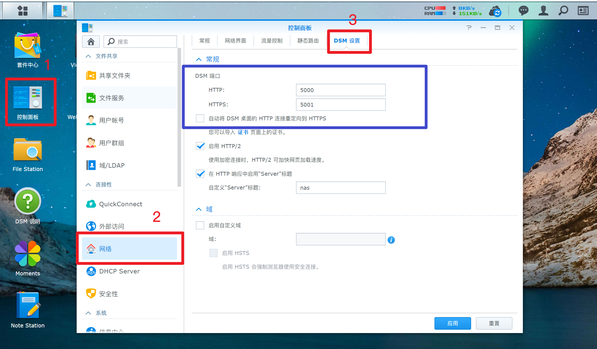
（2）到自己的群晖的控制面板的终端机和SNMP的终端机这里启动SSH功能，并设置端口为22,如下图所示：
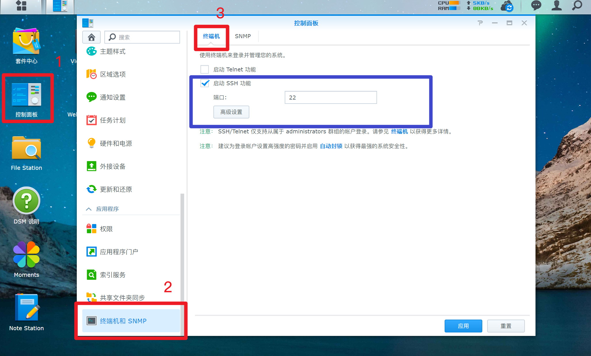
（3）到Skura Frp注册账号
（4）下载如下软件
2、用SSH登陆群晖
这里Putty和WinSCP都打开，Putty是cli界面（说人话就是看不见操作的界面），Wincsp是gui界面（说人话就是看的见具体的文件夹上面的，好操作一点），我这里主要用Putty操作，然后用Winscp看是否操作成功了。
打开putty软件，如图所示
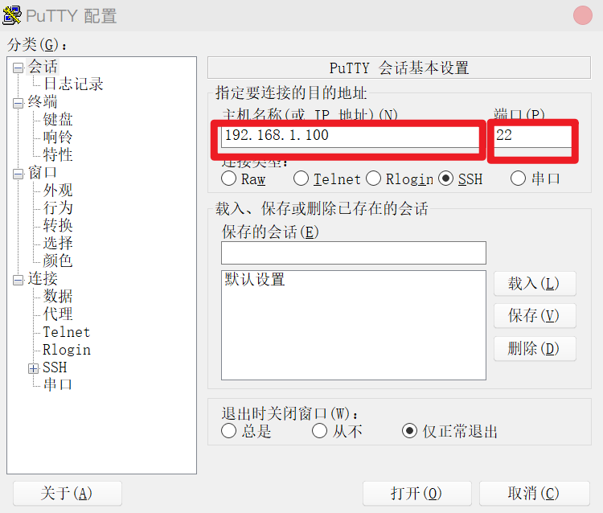
这里的
198.168.1.100是我的本地群晖的地址，不带端口的，这里的22就是我们能准备工作里面的第二步的端口。
我们打开后，输入你的群晖用户名和密码
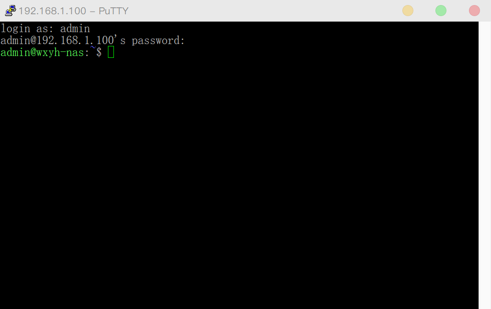
紧接着你需要用这个命令
sudo -i取得超级管理员权限，然后会提示你输入密码，密码和上面的密码是一样的
同时我们打开winSCP软件，和putty类似，需要注意的是文件协议这里需要选择SCP，如图所示：
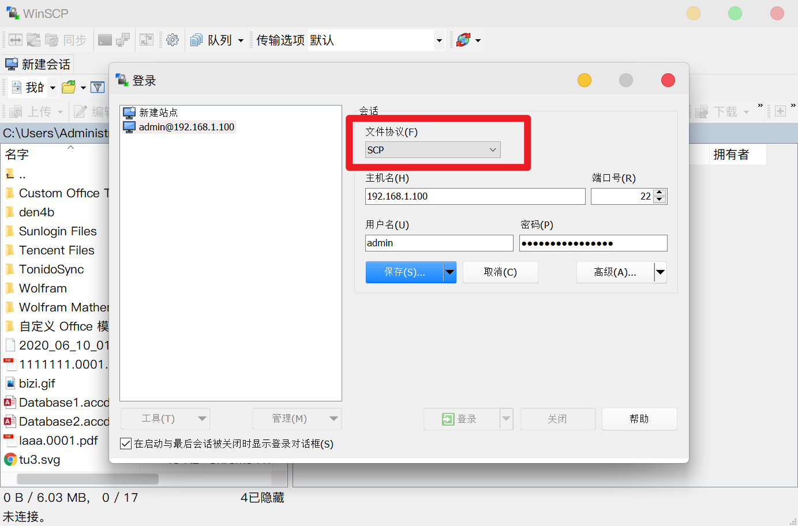
3、创建隧道
按照下图创建隧道
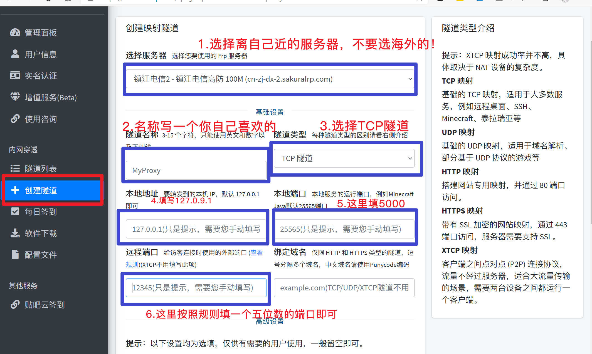
高级设置这里不用管，设置完这些保存就行了。
4、设置映射
映射创建完之后，选择对应的客户端下载，到网上查询自己的cpu然后按照需求下载，我是猫盘，猫盘是arm64位的cpu。这里需要注意的是安装路径的问题，打开winSCP可以看到有很多文件夹，如图所示
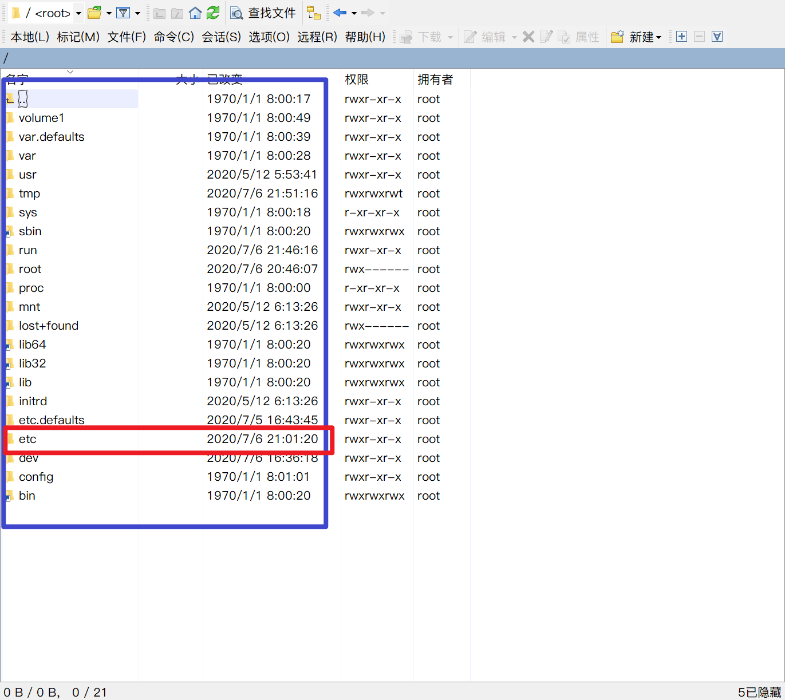
我这里是安装在红色部分的文件夹里面，也就是etc文件夹。
我们使用命令：
cd /etc进入etc目录，然后使用
mkdir skurafrp建立一个skurafrp的文件夹，你刷新一下winSCP软件是可以看到新建立了这个文件夹的，紧接着，我们进入这个文件夹，用
cd skurafrp就进入了skurafrp文件夹了，我们在这个文件夹里面安装文件，直接用命令
wget https://qianqu.me/frp/frpc_linux_arm64稍等片刻就可以安装成功了。
紧接着
chmod +x frpc_linux_arm64./frpc_linux_arm64接下的只需要按照提示提供访问密钥即可，密匙就是SkuraFrp后台的管理界面的用户信息那里有，如图所示
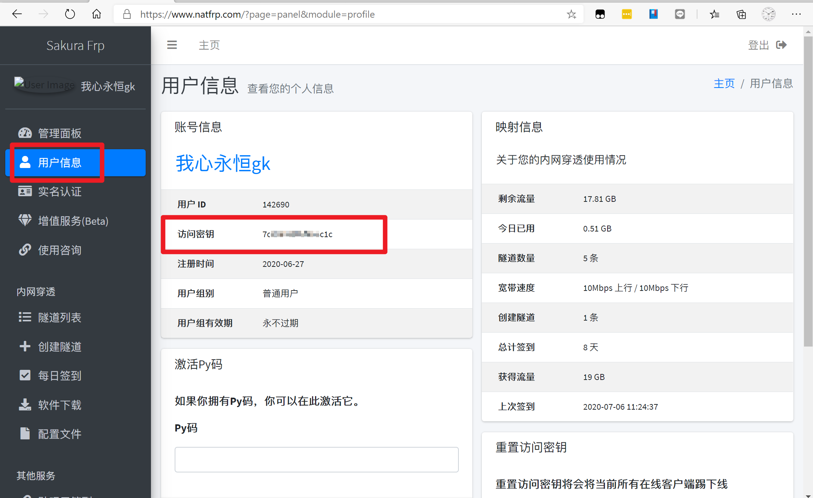
并选择对应的节点，注意请选择与你创建的隧道相同的节点,选择完节点后，如果出现“start proxy success”字样，则说明映射成功.
此时访问上面给出的地址，应当能够打开群辉的管理页面,此时说明映射已经测试成功，按
Ctrl+C组合键来退出程序。然后执行如下命令来让客户端后台保持运行：
nohup ./frpc_linux_arm64 &到这一步即可关闭SSH客户端，并继续使用之前给出的地址来访问你的群辉NAS。
5.设置内网穿透开机自启
上面设置完了有个问题就是如果突然断电什么的，群晖nas再次开机的时候就不能连接外网访问了，因此需要设置开机自启。
打开群晖的控制面板选择高级模式，这样就会出现任务计划
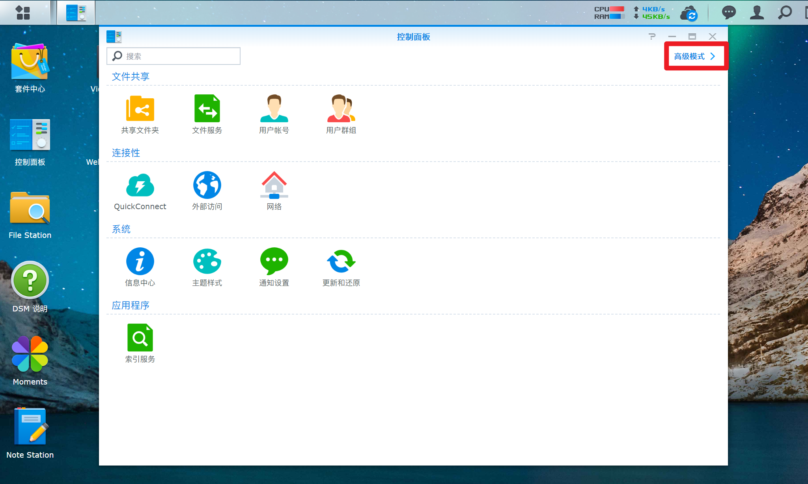
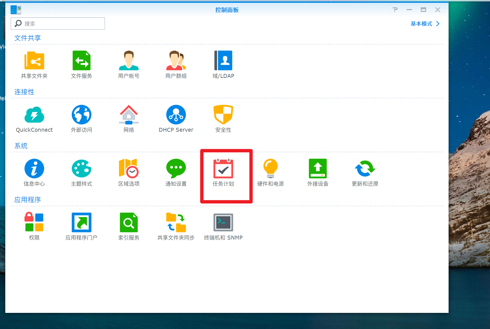
然后点击新增脚本，自定义用户脚本，开机脚本
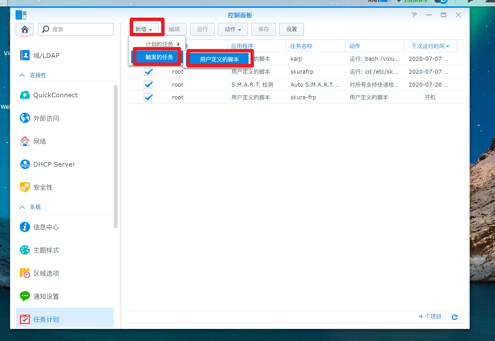
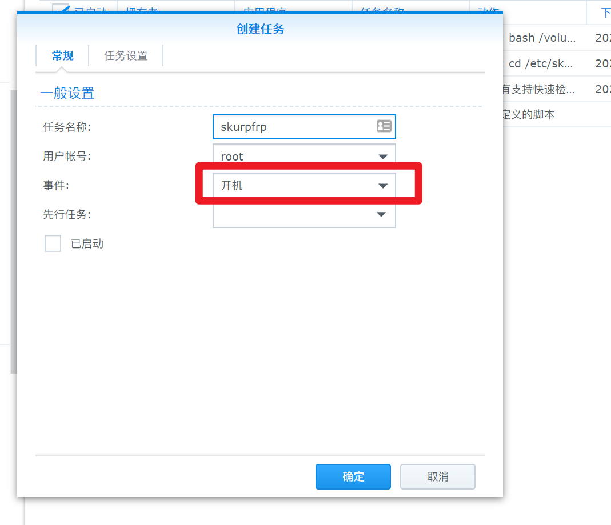
然后写入下面的代码
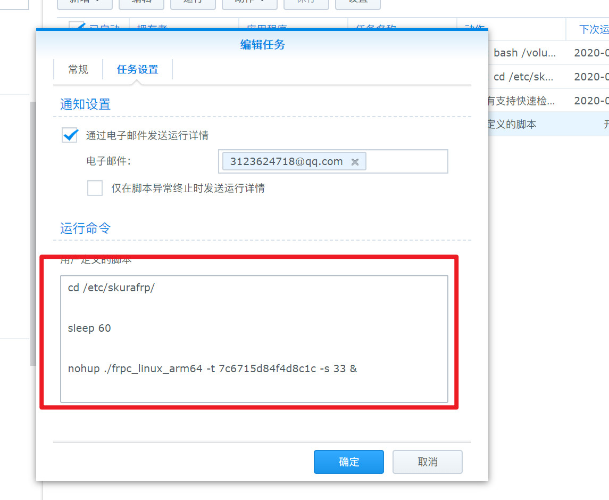
cd /etc/skurafrp/
sleep 60
nohup ./frpc_linux_arm64 -t 你的密匙 -s 隧道节点 &然后就大功告成了